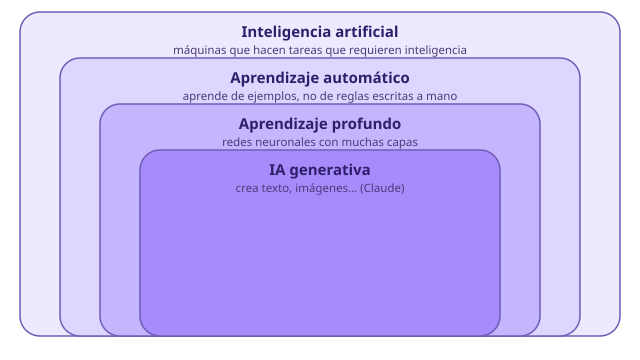

Módulo 1: ¿Qué es la inteligencia artificial?
Qué es (y qué no es) la IA, y dónde ya está en tu día a día.
La inteligencia artificial son programas que aprenden de ejemplos para hacer tareas que antes necesitaban una persona: entender un texto, reconocer una cara, recomendar una serie o escribir una carta de reclamación. No es magia ni una mente: es matemáticas y muchísimos datos.
Entender la IA desde cero
1. Un programa normal frente a la IA
Un programa tradicional sigue reglas que ha escrito una persona: «si la reserva es para más de 8 personas, avisa al encargado». La IA de hoy funciona al revés: en lugar de darle las reglas, se le dan miles o millones de ejemplos y ella descubre sola los patrones. A eso se le llama aprendizaje automático (machine learning).
| Programa tradicional | Inteligencia artificial (aprendizaje automático) | |
|---|---|---|
| Cómo se crea | Una persona escribe las reglas | Se entrena con muchos ejemplos |
| Ejemplo | Una calculadora o un TPV | Un traductor o un asistente como Claude |
| Si algo cambia | Hay que reprogramarlo | Se puede volver a entrenar o ajustar |
| Fallos | Siempre falla igual | Puede equivocarse de formas imprevistas |

2. Tipos de IA
| Tipo | Qué hace | Ejemplo |
|---|---|---|
| IA estrecha (la que existe hoy) | Muy buena en tareas concretas | Reconocer voz, recomendar música, traducir |
| IA generativa | Crea contenido nuevo: texto, imágenes, audio, código | Claude, generadores de imágenes |
| IA general (todavía no existe) | Entendería y aprendería cualquier cosa como una persona | Es una idea de ciencia ficción y de investigación |
3. La IA que ya usas sin darte cuenta
- 📱 Móvil: desbloqueo con la cara, corrector, predicción de texto, fotos que se ordenan solas.
- 📱 Redes y vídeo: lo que te recomiendan TikTok, YouTube o Netflix.
- 📱 Mapas: el tráfico previsto y la ruta más rápida.
- 📱 Traductores y asistentes de voz.
- 📱 Asistentes de texto como Claude, que conversan y escriben.
4. Para qué sirve este curso
No vas a aprender a programar IA. Vas a aprender a entenderla, usarla con criterio y sacarle partido, sobre todo en el mundo de la hostelería: atención al cliente, cocina, gestión y comunicación. Y a saber cuándo no fiarte de ella.
⚠️ Errores frecuentes y cómo corregirlos
| Lo que pasa | Por qué | Cómo corregirlo |
|---|---|---|
| «La IA lo sabe todo» | Suena muy segura al contestar | Es un modelo que predice texto: puede inventar datos. Siempre se verifica lo importante |
| «La IA es una persona» | Habla de forma natural | Es un programa; no tiene experiencias, emociones ni intención |
| «La IA me va a quitar el trabajo mañana» | Titulares alarmistas | Cambiará tareas y oficios; quien sepa usarla tendrá ventaja (módulo 12) |
🧩 ¿Cómo aprende la IA actual de aprendizaje automático?
🧩 ¿Qué tipo de IA es Claude?
🧩 ¿Cuál de estos es un ejemplo de IA en tu día a día?
✍️ Tu mapa de IA
Escribe tres lugares donde crees que ya usas IA (en el móvil, en redes, en un trabajo de hostelería que conozcas) y qué hace en cada uno.